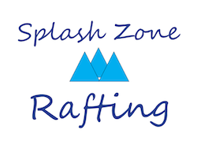

Overview
Purpose
The purpose of the Dry Oar website is to provide information about rafting trips and experiences on the Colorado and Roaring Fork Rivers.We also aim to provide excellent product quality and customer service.
Audience
My audience are teens up to people in their 50s who want to have a thrilling experience on the water with friends and family. These are also going to people who are missing the equipment for a great rafting adventure. Often, these individuals will be interacting on my site using a computer or mobile device.
Branding
Website Logo

Style Guide
Color Palette
| Primary | Secondary | Accent 1 | Accent 2 |
|---|---|---|---|
Typography
Heading Font: Lobster Two
Paragraph Font: Raleway
Normal paragraph example
The best Whitewater Rafting in Colorado, White Water Rafting Company offers rafting on the Colorado and Roaring Fork Rivers in Glenwood Springs. Since 1974, we have been family owned and operated, rafting the Shoshone section of Glenwood Canyon and beyond.
Colored paragraph example
Trips vary from mild and great for families, to trips exclusively for physically fit and experienced rafters. No matter what type of river adventures you are seeking, White Water Rafting Company can make it happen for you.
Navigation with Hover
Site Map
Wireframes
Home